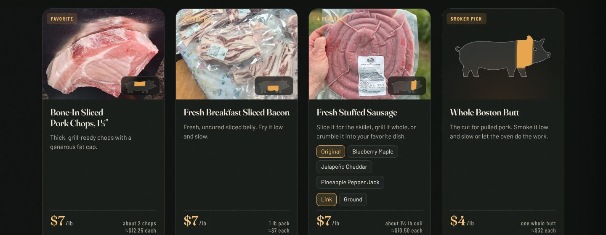

Client site · Lane Farms Pork
Real-time 3D sign + interactive store
- Scene: Three.js scene with a perspective camera, key, fill and rim lights, ACES tone mapping and a procedurally drawn sky used for reflections.
- Instancing: 120 chain links drawn as one instanced mesh. The sign is 12 stacked alpha-tested layers so the cut-outs have real thickness.
- Input: mouse parallax, scroll and phone tilt (gyroscope) all steer the sign, smoothed with easing so it sways like it's hanging.
- Frame budget: it samples 30 frame times. On weak devices it drops resolution, then frame rate, then freezes on a still frame.
- No hitching: shaders compile before the first animated frame, a fast 1024 px texture loads first and swaps to 2048 px when the page is idle, and rendering pauses when the sign is off-screen or the tab is hidden.
- Fallbacks: a static sign shows for reduced-motion settings or devices without WebGL.
- Game-style UI: a clickable hog chart (hit regions per cut), variant chips, quantity steppers, a cart and a ZIP-based shipping check.